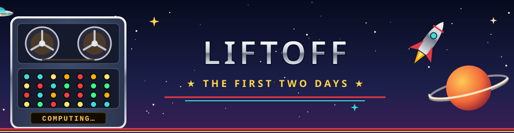

pages/01-start-here.html

▸ MISSION BRIEFING
GETTING STARTED: START HERE

COMMANDER SKIP SAYS:
Hey there, sport! The first two days aren't about Photoshop. Get every kid signed in, organized, and emailing you like a pro... and the rest of the semester runs on rails.
⚡ THE FIRST LAW OF DAY ONE
Every student signed in before the bell.
Culture first, then logins. But the logins aren't optional; a kid who can't sign in today loses tomorrow.
| I need to… | Go to |
|---|---|
| Know what students sign into | Creative Cloud in 5 Minutes |
| Plan day one and day two | The First Two Days |
| Grab lessons to paste in | Lesson Kits |
| Fix a kid who can't get in | Help! I Can't Get In |
🚀 THE TWO-DAY MISSION
Day 1: the room, then the sign-in.
Day 2: a folder system they'll use all year, shared with you, and their first professional email.
Two class periods. No Adobe experience needed.

🚀 MISSION CHECK
Minute 35 of day one, and you're behind. What do you cut?
- The sign-in check.
- Some of your procedures talk.
- The welcome and expectations.
COMPUTE ANSWER
B. Procedures reteach themselves through repetition; nobody remembers the pencil-sharpener speech anyway. The sign-in (A) can't wait; tomorrow needs working accounts. And the welcome (C) IS day one... it's the part they'll remember.
Built from my own Media Tech classroom at Caldwell High School. Steal what works for your room and leave the rest. ~ Chad Lawson
pages/02-creative-cloud.html
▸ INSTRUMENT PANEL
CREATIVE CLOUD IN 5 MINUTES
COMMANDER SKIP SAYS:
You don't need to know Photoshop yet, champ. Just three things: what they sign into, which app does what, and where the files go.
🎥 Watch: Day One in an Adobe Lab (5 minutes) [video goes here]
🔑 WHAT THEY SIGN INTO
Creative Cloud is the account, plus a little launcher that opens everything else. Usually the district assigns licenses, and students sign in with their school Google or Microsoft account. No personal Adobe accounts.
⚡ BEFORE DAY ONE, FIND OUT
- ☐ Who manages Adobe licenses (get their email)
- ☐ Google or Microsoft sign-in?
- ☐ Apps installed and updated in your lab?
- ☐ Can YOU sign in on a student machine?
🧰 WHICH APP DOES WHAT
- Photoshop: photos and pixels.
- Illustrator: logos and anything that has to scale.
- Premiere Pro: video.
☁ WHERE THE FILES GO
School cloud storage (Google Drive or OneDrive), never a lab computer's desktop. Lab machines get wiped. Kids change seats. The cloud doesn't care.
| FILE | WHAT IT IS |
|---|---|
| .psd | Photoshop working file. Keeps layers. |
| .ai | Illustrator working file. |
| .prproj | Premiere project. POINTS to clips; doesn't hold them. |
| .jpg/.png | Finished images. .png can be see-through. |
| .mp4 | Finished video. |
🚀 MISSION CHECK #1
Friday a student saves to the desktop of computer 14. Monday they sit at computer 9. Where's the project?
- On computer 9; it follows their login.
- Stuck on 14... if the weekend wipe missed it.
- In the cloud; it syncs on its own.
COMPUTE ANSWER
B. The desktop belongs to the machine, not the kid. That's why day two builds folders in cloud storage.
🚀 MISSION CHECK #2
Clips moved to a new folder; now Premiere shows red “media offline.” Which file type explains it?
COMPUTE ANSWER
.prproj. It only points to where the clips were. Pick the folder BEFORE importing, and never move the clips afterward.
pages/03-the-first-two-days.html
▸ FLIGHT PLAN
THE FIRST TWO DAYS
COMMANDER SKIP SAYS:
Times are for a 50-minute class. Stretch 'em or squeeze 'em to fit yours, sport!
📋 PRE-FLIGHT CHECKLIST
- ☐ Sign in to Creative Cloud yourself on a student machine
- ☐ Leave ONE machine signed out, for the demo
- ☐ Draft your course email; don't send it yet
- ☐ Something to write names on: every kid who can't sign in
📘 DAY 1 ▸ THE ROOM, THEN THE SIGN-IN
- 0–8: Welcome, seats, roll.
- 8–18: Expectations both ways. You go first.
- 18–30: What we'll make (say the app names), grading, how the room runs.
- 30–42: Sign-in check, everyone. Demo on the signed-out machine; write down every name that fails.
- 42–50: Send your course email live. “Tomorrow: your first professional email.”
📗 DAY 2 ▸ FOLDERS, SHARING, FIRST EMAIL
- 0–5: Fix yesterday's sign-in failures.
- 5–25: Lesson 1: folders together, screens visible, then share the class folder with you.
- 25–35: Lesson 2: bad email first, deadpan; then type a good one live.
- 35–48: Students send Getting To Know You.
- 48–50: Confirm arrivals; fix stragglers.
🔧 BENDING IT TO FIT
- Block schedule? Both days, one block.
- Licenses not ready? Run Day 2 first.
- No student email? LMS messages, same format.
- Joins in week three? Folders, sign-in, email.
🚀 MISSION CHECK #1
Day 2 writing time. When do you check subject lines?
- After they send.
- Before they hit send.
- Friday, when grading.
COMPUTE ANSWER
B. One lap before send saves a week of mislabeled email. A means 30 correction replies; C means the bad habit got a week of practice.
🚀 MISSION CHECK #2
Why do YOU go first with expectations?
COMPUTE ANSWER
Because a deal where the adult commits first feels like a deal, not a rule list. Keep your promises specific enough that they can hold you to them in week three. They will.
pages/04-lesson-kits.html
▸ MISSION FILES
LESSON KITS
COMMANDER SKIP SAYS:
Two lessons, ready to launch! Click one open. The white boxes talk to students... copy 'em straight into your LMS.
LESSON 01 📁 Set Up Your Workspace
“I lost my file” is the most expensive sentence in media production. This lesson retires it.
Done means:
- ☐ Archive folder, plus a folder for this school year
- ☐ Four project folders, spelled exactly
- ☐ Three theme images, renamed
- ☐ Class folder shared with you
- ☐ A file shared with a partner, and theirs opened
📋 COPY TO STUDENTS
- At the top of your school Drive, make a folder named
-- Archive --. Move everything already there into it. Nothing gets deleted. - Make a folder for this school year, like
2026-27. - Inside it, a folder for each class. Real names: “Media Design,” not “3rd hr.”
- Inside this class's folder:
01_Photoshop02_Illustrator03_Video04_Resources - Pick a semester theme: a game, team, band, animal... something you like.
- Save three theme images into
04_Resources, named likeWolves_01.jpg. - Share your class folder with your teacher. Every project in it is now turned in automatically.
- Share one image with a partner. Open the one they shared with you.
Why share on day two? Students turn in the real project file, so you can open it and see the layers. And partner sharing is practice for peer review... and every job they'll ever have.
🚀 MISSION CHECK
Which name follows the convention?
- download (3).jpg
- Wolves 01.jpg
- Wolves_01.jpg
COMPUTE ANSWER
C. A is a file nobody finds again. B is close, but spaces break things in some apps and links.
LESSON 02 ✉ The Professional Email
A professional email answers the reader's questions before they have to ask.
Done means: exact subject line, a greeting, a body that answers everything, a sign-off with name and class period.
📋 EMAIL 1 (SHOW FIRST)
Subject: hey
yo so my thing isnt working idk what happened it just wont do the thing
can u help
📋 EMAIL 2
Subject: [P3 Media Design] - Unit 3 Status
Hello, Ms. Rivera,
Done: three adjustment layers.
Next: mask the grade off the face.
Stuck: the mask hides the whole layer. Could you look tomorrow?
Thanks,
First Last, Period 3
Ask: 40 emails today... which gets answered first? Email 2 isn't fancy; it's useful. Subject format: [P# Course Name] - Task Name
📋 COPY TO STUDENTS: GETTING TO KNOW YOU
Subject: [P# Course Name] - Getting To Know You. Number your answers. Write in whatever language you're most comfortable in.
- What language do you prefer?
- Rate yourself 1–3: I keep my files organized.
- Rate yourself 1–3: I can figure out new software on my own.
- Creative apps you've used? “None yet” is fine.
- Computer at home? (yes / sometimes / no)
- What would you be excited to make?
- An artist, brand, game or creator whose style you like?
- Anything that would help you succeed here?
Tip: the 1–3 ratings are your baseline; ask again at the end. Questions 6 and 7 hand you project ideas all semester.
🚀 MISSION CHECK
A student writes the whole email in Spanish, with the right subject, greeting and sign-off. Count it?
COMPUTE ANSWER
Yes, every word. The format is the skill; the language is theirs. Reply on the same thread with a translation tool.
📥 Supply drop [coming]: workspace handout · Two Emails handout · subject-line wall poster · Day 1 welcome slides
pages/05-help.html
▸ DISTRESS SIGNALS
HELP! I CAN'T GET IN
COMMANDER SKIP SAYS:
Sign-in trouble on day one is as normal as rain, sport. First question, every time: are they using their SCHOOL account?
| The student says… | Do this |
|---|---|
| “It's asking which account.” | They made a personal Adobe account once. Pick school. Every time. |
| “It says trial,” or won't open. | No license yet. Send the name to your Adobe admin; they do folders and email meanwhile. |
| “Sign-in keeps looping.” | Sign out of every browser account; retry with only the school one. Still looping? IT. |
| “But I signed in yesterday!” | Normal on lab machines. Sign in again; cloud files are fine. |
| “I forgot my password.” | It's the school password, not Adobe's. District reset process. |
FILE NAMING, IN FOUR RULES
01 NO SPACES. Wolves_01.jpg
02 LEADING ZEROS: 01, 02... 10
03 NAME IT SO A STRANGER COULD FIND IT
04 SHARE THE PROJECT FILE, NOT A PICTURE OF IT
🌐 MULTILINGUAL LEARNERS
- They can write in their most comfortable language; reply with a translation tool.
- Same format in every language: subject, greeting, body, sign-off.
- Write the arrangement down so it carries all course.
🚀 MISSION CHECK
Minute 38 of day one. Six students still can't get in. Your move?
- Six separate IT tickets, right now.
- Write down names and errors, start them on folders, send IT one email with the list.
- Tell them to try again at home tonight.
COMPUTE ANSWER
B. One list gets fixed faster than six tickets, and nobody sits idle. C sends the problem home, where nobody can see it... and some kids don't have a computer there.